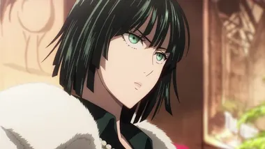

AniMaGa
은혼 1기
사무라이의 나라.
우리의 나라가 그렇게 불리던 것은 지금은 이제는 먼 옛 이야기이다.
20년 전 갑작스럽게 우주에서 내려온 천인의 개항과 폐도령에 의해 사무라이는 쇠퇴의 길을 걷게 된다.
주술회전 1기
평범한 소년 VS 저주의 왕 격돌!!
햇병아리 주술사들의 뜨거운 반란이 시작된다.
경이로운 신체 능력을 가진 고등학생 이타도리 유지는 병상에 누워 있는 할아버지의 병문안을 가는 것이 일과이다. 그러던 어느 날, 학교에 잠들어 있던 ‘주물(呪物)’의 봉인이 풀리면서 괴물이 나타나고 이타도리는 미처 도망치지 못한 선배를 구하기 위해 학교 건물로 뛰어드는데?!
암살교실 1기
쿠누기가오카 중학교 3-E반에게는 큰 비밀이 있다.
바로, 학생들이 암살자이며. 암살목표는 '선생님'이라는 것.
어느날 갑자기 나타나 달의 70%을 날려버려, 영원히 초승달만 보게끔 만든 수수께끼의 초생물. 그는 내년에는 지구를 날려버리겠다고 선언했으며, 초생물이 진심으로 덤벼들 경우, 전 세계는 어쩔 도리 없이 멸망을 맞는다.
한데, 여기서 그 초생물은 무슨 이유에서인지. '쿠누기가오카 중학교 3-E의 선생님'으로서 일하겠다는 제안을 했고, 정부는 그것을 받아들였다.
교사로 일하는 동안 감시할 수 있고, 동시에, 거의 상시 30명이 넘는 인간이 '그의 곁에서 그를 죽일 기회를 찾을 수 있기' 때문이다. 암살의 성공보수는 백억 엔.
인류의 운명을 걸고 30여 명의 중학생들과, 한 초생물적인 선생…아니 '살생님'으로서의 수업이 시작된 것이었다.
약속의 네버랜드 1기
어머니처럼 생각하는 그녀는 부모가 아니다.
함께 사는 그 아이들도 형제가 아니다.
여기 그레이스 필드 하우스는 작은 고아원.
지극히 평온한 이 하우스에서 겸손하면서도 행복한 나날을 보내는 세 명의 주인공 엠마, 노먼, 레이.
그러나 그들의 일상은 어느 날 갑작스러운 끝을 고했다...
아이들을 기다리는 기구한 운명은...!?
도쿄 리벤져스 1기
집값이 싼 낡은 아파트에 거주, 나이 어린 점장에게 바보 취급을 당하고, 그중에서도 최고봉은 동정이라는 사실.
「중학교 때가 최고 전성기」였던 전 불량배 타케미치가 전 여친의 죽음을 계기로 12년 전 중학시절로 타임슬립..
변경의 팔라딘
과거에 멸망한 망자의 도시...
그 외딴 땅에는 유일하게 살아있는 인간 아이, 윌이 있었다. 소년을 키운 것은 세 명의 언데드.
호쾌한 해골 검사 브래드, 얌전한 미라 신관 마리, 비뚤어진 성격의 유령 마법사 거스.
이들에게 가르침을 받고, 사랑을 받으며 자라난 소년은 언제부턴가 한 가지 의문을 품게 되는데...
.........나의 정체는 대체 뭐지?
윌에 의해 밝혀지는, 변경의 도시에 숨겨진 불사자들의 수수께끼.
선한 신들의 사랑과 자비. 악한 신들의 집착과 광기.
크면 알려주겠다고 약속했었지. 조금 길지만, 이야기해 줄께. 많은 영웅들과 우리의 죽음..... 그리고 네가 여기서 자란 이유에 대한 이야기기도 해.
그 모든 것을 알았을 때, 소년은 성기사가 되는 길을 걷기 시작한다.
귀멸의 칼날-무한열차
나비 저택에서의 치료를 마친 탄지로 일행은 다음 임무지인 <무한열차>에 도착한다. 그곳에서는 단기간에 40명 이상의 사람이 행방불명되었다고 한다. 네즈코를 동반한 탄지로와 젠이츠, 이노스케 일행은, 귀살대 최강의 검사인 <주>의 한 사람, 염주(炎柱) 렌고쿠 쿄쥬로와 합류하여, 어둠 속을 달리는 <무한열차> 안에서, 혈귀와 맞서는 것이었다.
호리미야
청춘은 새콤달콤... 하지만 의외로 시큼할 뿐일지도!?
지금 청춘인 사람도, 청춘이 먼 과거가 된 사람도 무심코 웃으며 마음이 따뜻해지는, 대충 그런 느낌의 청춘 코미디!
귀멸의 칼날-환락의 거리
렌고쿠 쿄쥬로의 죽음으로부터 4개월 후, 음주 우즈이 텐겐은 도깨비가 요시와라 유곽에 있다는 정보를 얻고 유곽에 잠입시킨 아내들의 연락이 끊기자 잠입 임무에 쓸 여성 대원이 필요하다며 나비 저택에서 아오이와 나호를 상관 명령으로 억지로 데려가려고 한다. 하지만 카나오가 말없이 붙잡고 말리는 바람에 말을 하라며 성을 내던 중 마침 임무에서 귀환한 탄지로, 젠이츠, 이노스케와 실랑이를 벌인다. 실랑이 끝에 아오이와 나호는 전투 요원이 아니니 대신 가겠다는 세 명의 말로 합의를 본다. 등나무꽃 저택에서 요시와라 잠입 임무의 브리핑을 듣고, 우즈이가 개판으로(…) 여장시킨 세 사람은 그의 세 아내가 잠입한 가게에 각자 따로 잠입한다.
하이큐 1기
나는 날 수 있다!
배구에 매료되어 중학생 시절 최초이자 마지막 공식전에 출전한 히나타 쇼요. 하지만 '코트 위의 제왕'이라는 별명을 가진 천재 선수 카게야마에게 처참히 패하고 만다.
복수를 맹세한 히나타는 카라스노고 배구부의 문을 두드리는데?!
그리고 카라스노 고교에 들어가는데 복수대상인 카게야마가 카라스노 고교에?!!

원펀맨
괴수들이 출몰하는 현대 도시. 취미로 히어로 일을 하는 사나이가 나타났다.
반짝이는 대머리에 맹한 얼굴, 다소 촌스러운 복장을 한 사이타마는 아무리 봐도 유약한 소시민처럼 보이지만 사실은 혹독한 훈련을 거쳐 비현실적인 힘을 손에 넣은 인물이다. 그 힘을 이용해 어떤 괴수나 로봇도, 심지어 외계인까지 주먹 한 방으로 해결해 버리는데...
하지만 악당들을 너무 금방 쓰러트려버리는 바람에 아무도 그의 노고를 알아채지 못한다...?!
진격의 거인 1기
그날, 인류는 떠올렸다.
놈들에게 지배당해왔던 공포를...
새장 속에서 갇혀만 살았었던 굴욕을...